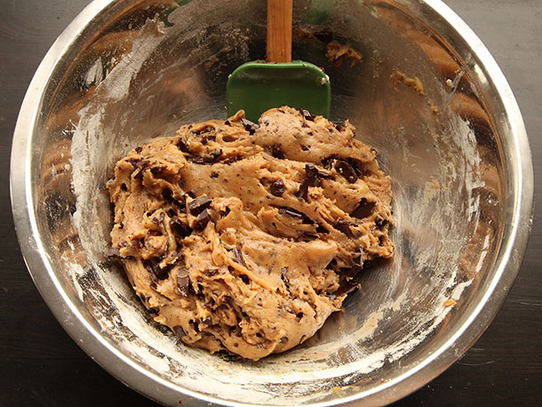
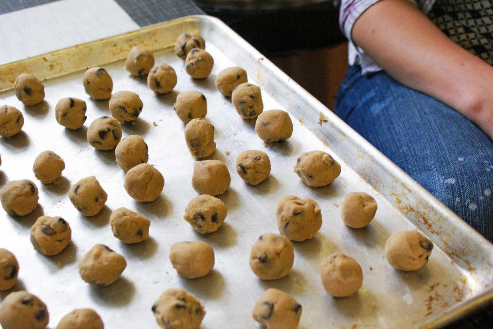
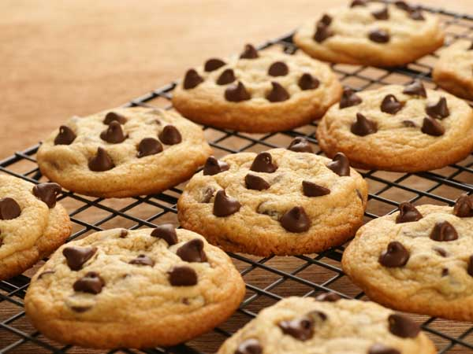
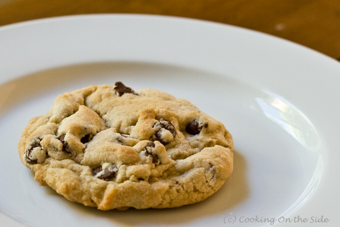

Yumm!

Everyone loves chocolate cookies, and if they don't, they're wrong. This cookie recipe is simple, quick, and best of all: easy to remeber! check out the ingredients bar. Lets Get baking!
Directions:
makes 1 dozen Cookies
- Preheat oven to 350 degrees.
- Cream both brown and white sugar with the butter.
- Add vanilla and eggs, mix well.
- Combine dry ingredients together and gradually add to the wet mixture.
- Stir in chocolate chips.
- Roll into 1 1/4" balls and place on non-stick cookie sheets, about 2" apart.
- Bake for 10 to 12 minutes.
- Cool Before Serving.
- Enjoy!
Use the left and right arrow keys to keep your progress in the recipe.
Tips:
- For a Healthier variety, Add Rasins or Don't Eat cookies.
- Work fast after mixing your wet and dry ingredients or else your cookies will be flat.
- Cookies are hot after coming out of the oven.
- Try substituting chocolate chips for m&ms or something.
- Add some cocoa powder for double chocolate cookies.
Shopping list
- 3/4 cup white sugar
- 1 cup brown sugar
- 1 cup butter, softened
- 1 tablespoon vanilla
- 2 large eggs, slightly beaten
- 3 cups all-purpose flour
- 3/4 teaspoon baking soda
- 3/4 teaspoon salt
- 3 cups semi-sweet chocolate chips
Click an item to cross it off your list!
Made by Daniel Harris. August 2014.